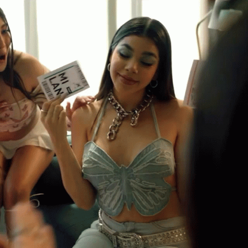
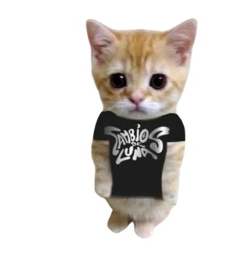

Cambios de Luna es el esperadísimo álbum debut de estudio de Kenia Os, lanzado a nivel mundial el 24 de marzo de 2022 bajo el sello discográfico de Sony Music México.
Este proyecto marcó un antes y un después en su carrera, consolidando su transición formal de creadora de contenido en internet a una artista respetada dentro de la industria del pop mexicano. En sus propias palabras, el disco funcionó como un "diario de vida íntimo" donde plasmó un proceso profundo de sanación, resiliencia y empoderamiento tras atravesar momentos muy complejos a nivel personal y legal.


En el arte conceptual podemos ver a Kenia sobre una isla flotante rodeada de nubes, enmarcada por lunas de cristal que representan cada una de las fases del satélite. Las mariposas y el reflejo lunar simbolizan la metamorfosis de su carrera: dejar atrás una versión de sí misma para renacer con total control de su arte y de sus decisiones.
Top Canciones en YouTube
Estadísticas registradas al momento del lanzamiento de este sitio.